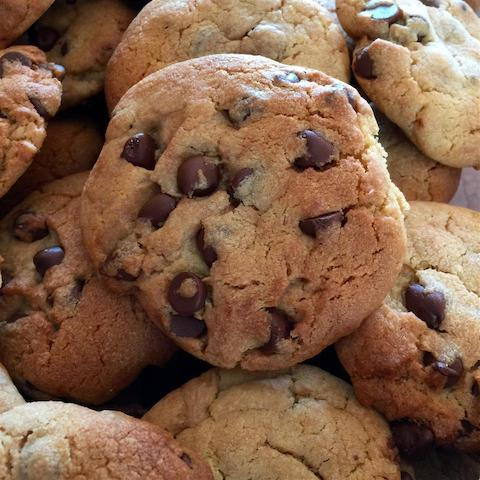

Chocolate Chip Cookies
Home

Description
Chocolate chip cookies made with instant vanilla pudding
Ingredients
- 1 cup butter, softened
- 3/4 cup packed brown sugar
- 1/4 cup white sugar
- 1 (3.5 ounce) package instant vanilla pudding mix
- 2 large eggs
- 1 teaspoon vanilla extract
- 2 1/4 cups all-purpose flour
- 1 teaspoon baking soda
- 2 cups semisweet chocolate chips
Steps
-
Preheat oven to 375 degrees F
-
In a mixing bowl, cream butter and sugar. Add pudding mix, eggs and vanilla.
combine flour and baking soda; add to creamed mixture and mix well. Fold in
chocolate chips.
-
Drop by teaspoonfuls onto ungreased baking sheets. Bake for 10 to 12 minutes
or until lightly browned.